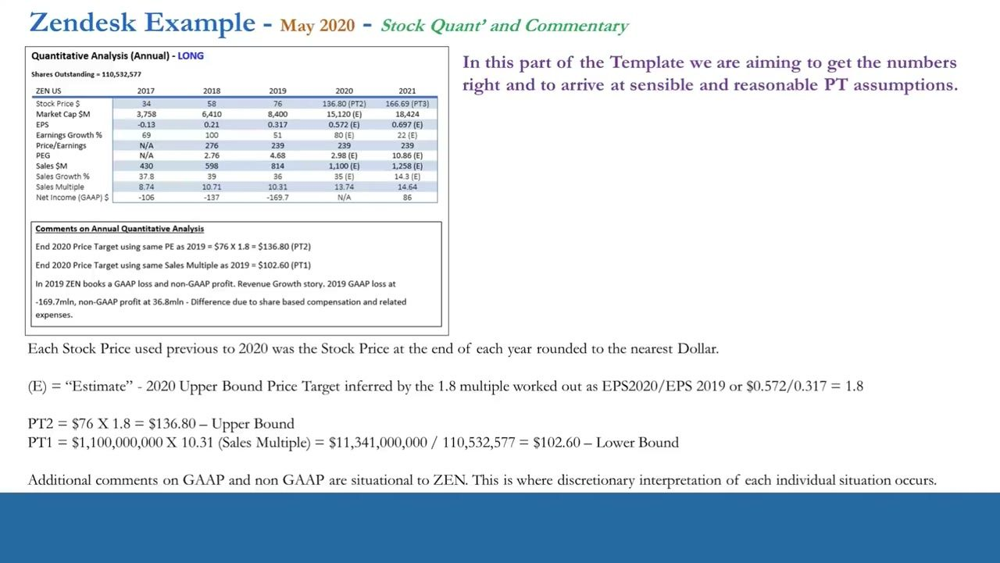
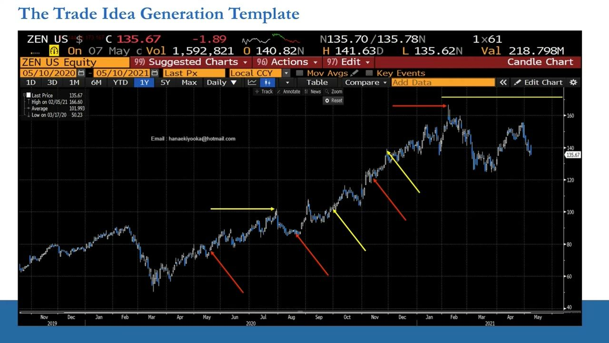
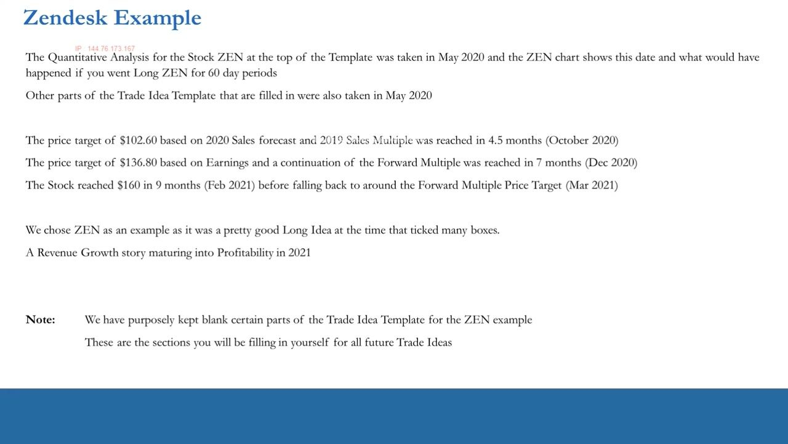
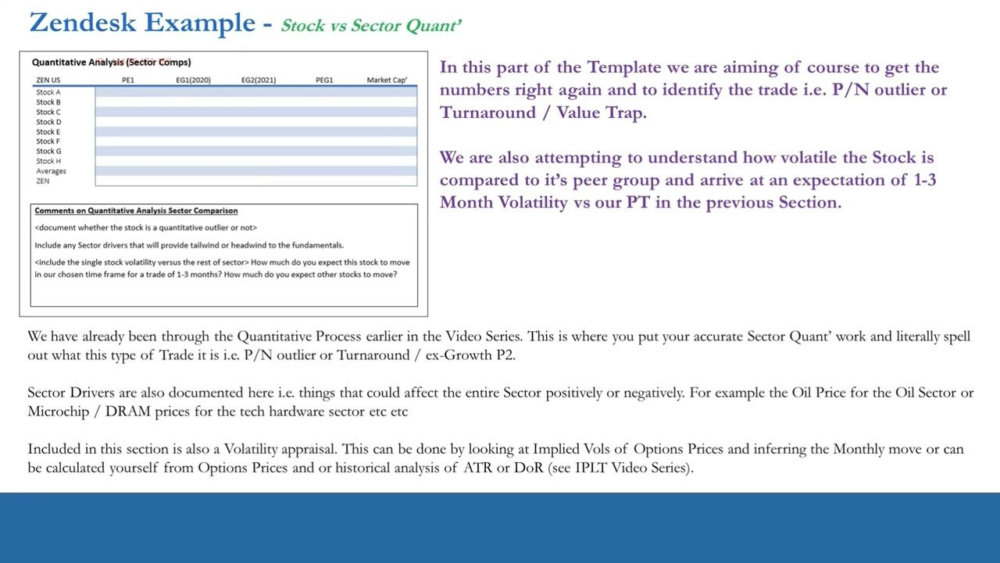
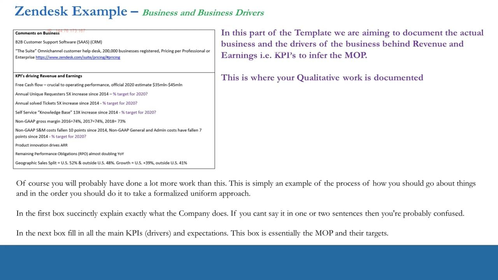
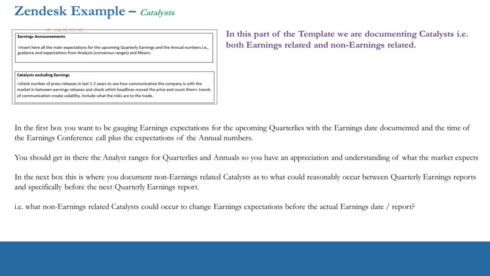
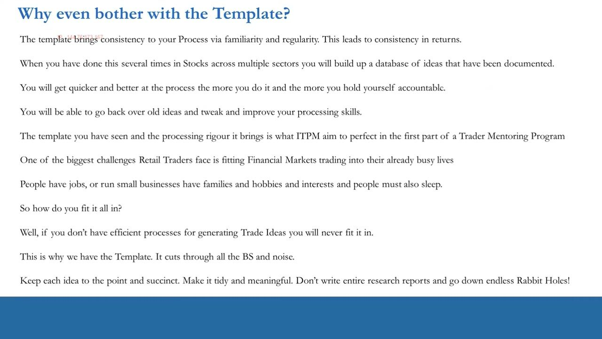
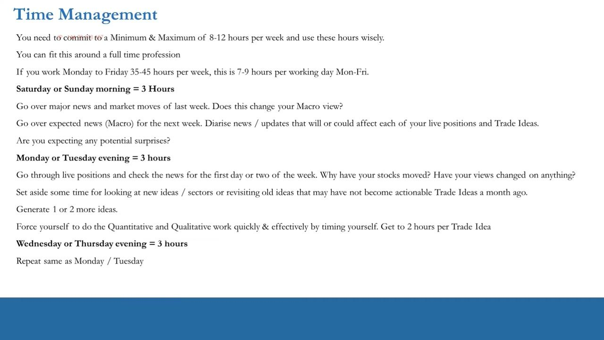
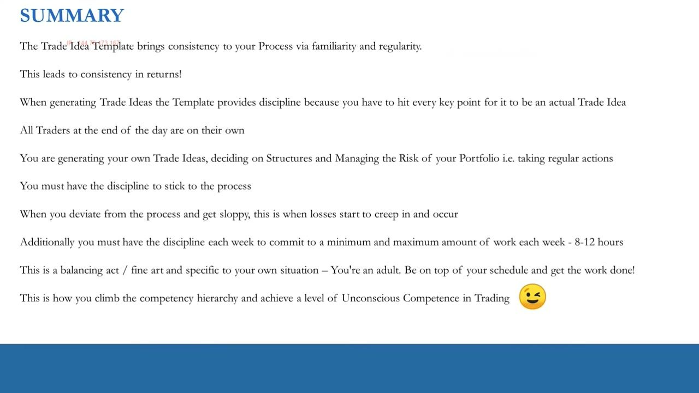

Trade Idea Generation Template — Part 2
Finishing the ZEN price-target method, backtesting it, and completing every remaining section of the template — then the discipline and time management that make it repeatable.
Part 1 built the quant. Part 2 turns it into a range of price targets, stress-tests them against how Zendesk actually traded, and fills in the sector-comps, business-drivers, catalysts and structure sections. The payoff isn't a perfect report — it's a repeatable process you can run in 8-12 hours a week.
The gist
- Price targets use BOTH earnings and sales while keeping valuation constant: a conservative lower bound (sales) and a 'blue sky' upper bound (earnings) — 'a scientific art', not an exact science.
- ZEN backtest: end-2019 price $76, May-2020 price also $76. PT1 $102.60 (sales) hit in ~4.5 months (~90 trading days, Oct 2020); PT2 $136.80 (earnings) hit in 7 months (Dec 2020); the stock reached $160 in Feb 2021; PT3 was ~$166.69, an end-2021 target.
- Probabilistic trade-out beats formulaic: enter ~$76, exit ~$100-102 → ~$25/share ≈ 30-33%; a rigid day-60 exit at ~mid-80s → ~$10 ≈ 13-15%. The 20-60 day horizon is a guide, not an exact science.
- Sector Comps panel columns: ZEN US | PE1 | EG1(2020) | EG2(2021) | PEG1 | Market Cap, with an Averages row and ZEN — makes a positive/negative outlier, turnaround, value-trap or ex-growth phase-2 short visible at a glance.
- Business drivers for ZEN: B2B SaaS CRM 'The Suite', 200,000 businesses; FCF est $35mln-$45mln; Unique Requesters 5X, solved Tickets 5X, Knowledge Base 13X since 2014; non-GAAP gross margin 74%/74%/73% (2016/17/18); RPO ~doubling YoY; geo split US 52%/outside 48%, growth US +39%/outside +41%.
- The Catalysts section — specifically non-earnings catalysts before the next quarterly report — is what defines a trade vs an investment. Be intellectually honest; no 'mumbo jumbo'.
- The 7/10 rule: don't be a perfectionist. A 7-out-of-10 idea repeated on demand is great; an extra 20 hours to make it an 8 isn't feasible — and trade structure alone can lift a 7 to an 8.
- Time management: min 8 / max 12 hrs a week — a weekend 3-4 hr review plus two weeknight 3-4 hr sessions, ≥1-2 ideas per session, target 2 ideas/week, inventory of 10-15. 'Good traders are efficient traders.'
Two targets, one range: earnings AND sales
- Use both earnings and sales estimates, keeping valuation constant, to produce two price targets.
- Lower bound (realistic): if ZEN hits sales but not earnings, expect ~$100-105.
- Upper bound (blue sky): if ZEN delivers on the FY2020 $0.57 EPS, $130-140 by end-2020.
- PT1 = $1,100,000,000 × 10.31 sales multiple / 110,532,577 shares = $102.60; PT2 = $76 × 1.8 = $136.80.
There is no single way to set targets — it changes by sector and by stock. The two principles are fixed: use both earnings and sales with valuation held constant, and always produce a range from a conservative number to a blue-sky number.

A scientific art, not an exact science
- No rulebook and no one-size-fits-all across stocks and sectors.
- Discretion, common sense, and reasonable assumptions do the work.
- Be intellectually honest with yourself when picking the assumptions.
- Get the spreadsheet numbers right before copying them into the Word document.
The whole quantitative section exists to arrive at sensible, reasonable conclusions about where the stock could go in the next period. Anton's phrase for the target-setting craft is 'a scientific art'.
The ZEN backtest on the Bloomberg chart
- Analysis was taken in May 2020; end-2019 price $76, May-2020 price also $76.
- Red arrows mark 60-day windows (Aug 2020, Nov 2020, ~early Feb 2021); yellow arrows mark price targets.
- PT1 $102.60 (2020 sales forecast × 2019 sales multiple) reached ~4.5 months (Oct 2020); traded at/around it as early as end-July.
- PT2 $136.80 (earnings, forward multiple) reached in Dec 2020 — 7 months after the May analysis; PT3 was $166.69.
The chart backtests the template on real price history: the same quant work done in May 2020, then a look at where the stock sat at each 60-day checkpoint versus each yellow price-target line.

Trade the probability, not the last tick
- Enter ~$76, exit ~$100-102 → ~$25/share ≈ 30-33% over the horizon.
- Rigid day-60 exit → likely ~mid-80s → ~$10/share ≈ 13-15% from a ~$75.76 start.
- If 30-40 days pass and the stock is at/around your target, trade out on a probabilistic basis.
- You can re-enter later — but reassess current fundamentals and weigh opportunity cost of capital.
Being active and taking a probabilistic approach beats a formulaic day-60 exit, because on exactly day 60 the stock is probably not sitting on your target. The horizon is a guide; the probability of hitting the target is what you trade.

How the ZEN idea actually played out
- PT1 $102.60 hit early Oct 2020; PT2 $136.80 hit first week of Dec 2020 (just outside a mid-Aug 60-day window).
- Stock reached $160 in Feb 2021 (nine months), then fell back to ~$136 (the forward-multiple target) by Mar 2021.
- PT3 ~$166.69 was an end-2021 target; the stock almost got there in early 2021 — too far too quick, so price corrected.
- A revenue-growth story maturing into profitability in 2021 — a solid long that ticked many boxes.
ZEN was chosen because it illustrates the archetype cleanly: a revenue-growth name maturing into profits, where price ran ahead of fundamentals in early 2021 and then corrected back toward the forward-multiple target.
Sector Comps: spot the outlier at a glance
- Columns: ZEN US | PE1 | EG1(2020) | EG2(2021) | PEG1 | Market Cap, with an Averages row and ZEN below it.
- A copy-paste from your sector spreadsheet — the stock's quant sits visually against the sector averages.
- Makes it obvious whether it's a positive/negative outlier, turnaround, value trap, or ex-growth phase-2 short.
- You can add extra columns; it's a template, not a fixed form.
This panel displays the trade identification quantitatively versus the sector. The visual contrast between the stock's row and the averages row is the point — the trade type should jump out.

The Sector Comps comments box
- State whether the stock is a quantitative outlier — and exactly what kind of trade it is.
- Record sector drivers that are tailwinds or headwinds: e.g. oil price for the oil sector, microchip/DRAM prices for tech hardware.
- Add a volatility appraisal: realized + implied vol, single stock versus the rest of the sector.
- Infer a 1-3 month expected move, compare it to peers, and cross-check it against your PTs — adjust the bounds if needed.
Implied vol from options prices infers a monthly/quarterly move; realized vol comes from distribution-of-returns and ATR analysis (from the IPLT/PTM series). The goal is to make sure your price-target expectations are realistic inside the 20-60 day horizon.
Business & Business Drivers (KPIs)
- Box 1: say what the company does in one or two sentences — ZEN is B2B SaaS CRM 'The Suite', 200,000 businesses. If you can't, you're confused.
- Box 2 (the KPIs = the Management Operating Plan): FCF est $35mln-$45mln; Unique Requesters 5X, solved Tickets 5X, Knowledge Base 13X since 2014.
- Non-GAAP gross margin 2016=74%, 2017=74%, 2018=73%; S&M costs -10 points and G&A -7 points since 2014; RPO almost doubling YoY.
- Geographic sales split US 52% / outside 48%; growth US +39% / outside +41%.
This section documents what the business actually does and the KPIs driving revenue and earnings — filling the KPI box is essentially writing down the management operating plan and its targets. The writing is easy; the research behind it is the work.

Catalysts: earnings vs non-earnings
- Box 1 — Earnings Announcements: the earnings date, conference-call time, and analyst consensus ranges/means for quarterlies and annuals.
- Box 2 — Catalysts excluding Earnings: what could reasonably occur before the next quarterly report to move earnings expectations.
- Non-earnings catalysts are what define a trade idea versus an investment idea.
- Be intellectually honest — no 'mumbo jumbo'; if the next report is ~45 trading days out and you can't find catalysts, it's an investment (or a 'tumbleweed' stock), so pass.
Catalysts are what turn an investment process into a trade. Struggling to fill the non-earnings box is a signal: with no near-term catalysts, live capital is likely wasted and opportunity cost points you elsewhere.

Timing & Structure
- Insert your TA / price-action charts plus commentary so you're visually on top of timing.
- Check short interest for the path of least resistance.
- Document the proposed trade structure that optimizes ROI around the timing and catalysts.
- The template's call-options example is beyond PTM scope — in PTM the assumption is a long or short stock position (outright, margin, or CFDs).
This section combines the timing appraisal, expected volatility, price targets, and the proposed structure in one document — the structure has to make sense in the context of all of that and the 20-60 day horizon. TA and price-action are covered in later videos.
Why bother with the template?
- It brings consistency to your process via familiarity and regularity — which leads to consistency in returns.
- Run it across many stocks and sectors and you build a documented database of ideas you can revisit and improve.
- The 7/10 rule: a repeatable 7-out-of-10 is great; 20 extra hours for an 8 isn't feasible.
- Trade structure alone can lift a 7 to an 8 — perfectionists never become effective long/short portfolio managers.
The hard work happens before the template; the template just documents it clearly and concisely. Fitting trade generation into a busy life is one of the biggest retail challenges — efficient process is the only way it fits, so keep each idea tidy and avoid rabbit holes.

Time Management: min 8, max 12 hours a week
- Weekend (Sat or Sun morning), 3-4 hrs: review last week's news/moves (does it change your macro view?), diarise the week ahead.
- Two weeknight sessions (e.g. Mon/Tue and Wed/Thu evenings), 3-4 hrs each: review live positions, why stocks moved, generate 1-2 fresh ideas; time yourself to ~2 hrs per idea.
- Target 2 ideas per week; keep an inventory of 10-15 high-quality ideas as stale ones drop out.
- Don't stare at your P&L tick by tick — 'good traders are efficient traders.'
Commit to a minimum and maximum each week and use the hours wisely so it fits around a full-time job. Deviating from the process and getting sloppy is when losses creep in — discipline here is how you climb the competency hierarchy toward unconscious competence.

Recap: catalysts turn investments into trades
- The quantitative and qualitative processes are the easy part to get good at; identifying catalysts is what turns an investment into a trade.
- Focus on non-earnings catalysts incremental to revenue and earnings expectations — there is no encyclopedia; it comes with experience.
- The template is a snapshot of your ability to generate an idea; you can't have a trade idea if every section isn't properly completed.
- Most retail traders get genuinely good at it in ~3 months of committed practice — next up: macro-driven single-stock trade ideas.
The through-line: an abundance of high-quality trade ideas, generated on repeat, is what makes you consistently profitable — and catalysts are the ingredient that converts a good analysis into an actual trade.

Glossary
- Blue-sky price targetThe upper-bound, bullish PT derived from earnings estimates with valuation held constant (for ZEN, PT2 $136.80); paired with a conservative lower-bound sales-based PT to form a range.
- PT1 / PT2 / PT3The successive price targets for ZEN: PT1 $102.60 (sales-based, lower bound), PT2 $136.80 (earnings-based, upper bound), PT3 $166.69 (end-2021 target).
- Sales multiplePrice-to-sales valuation ratio held constant to derive a sales-based PT; ZEN's 2019 sales multiple of 10.31 gives PT1 $102.60.
- Probabilistic trade-outExiting when the stock reaches or nears your target within the horizon rather than on a fixed day-60 rule — for ZEN, ~30-33% vs ~13-15% for the formulaic exit.
- 20-60 day time horizonThe trade window Anton works in; a guide (not an exact science) for when the catalyst-driven move should play out.
- Sector CompsThe panel placing the stock's quant (PE1, EG1/EG2, PEG1, market cap) against sector averages to reveal outliers, turnarounds, value traps, or ex-growth phase-2 shorts.
- Value trapA stock that looks cheap on quant metrics but whose fundamentals justify the low valuation — a false positive to flag in the comments box.
- Ex-growth phase-2 shortA short thesis on a formerly high-growth stock now decelerating into a second, lower-growth phase.
- MOP (Management Operating Plan)The company's operating targets, effectively reconstructed by documenting the KPIs that drive revenue and earnings.
- RPO (Remaining Performance Obligations)Contracted future revenue not yet recognized; for ZEN it was almost doubling year-on-year, a forward-demand KPI.
- Catalyst (non-earnings)Any event before the next quarterly report that could move revenue/earnings expectations; its presence is what defines a trade versus an investment.
- 7/10 ruleAim for a repeatable 7-out-of-10 idea rather than perfection; trade structure alone can lift a 7 to an 8, and chasing an 8 by hand isn't worth the opportunity cost.
- Idea inventoryA working pool of 10-15 high-quality trade ideas, refreshed at ~2 new ideas/week as stale ones drop out.
- Unconscious competenceThe top of the competency hierarchy — running the process well without conscious effort, reached through disciplined, consistent repetition.